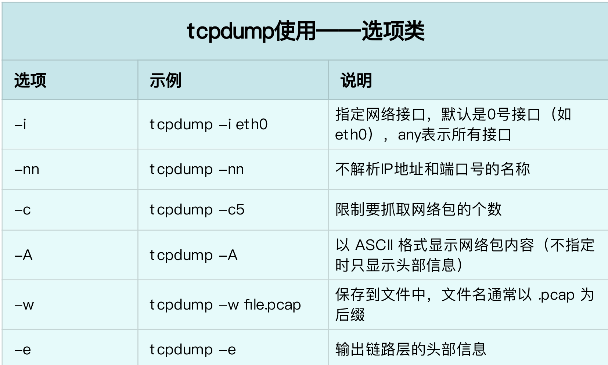
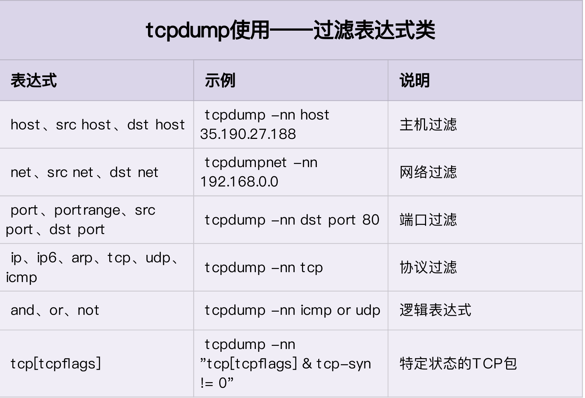
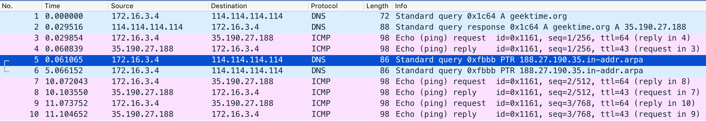
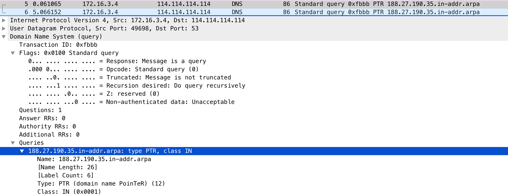
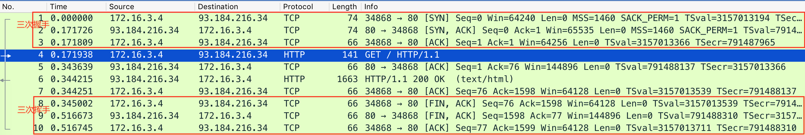
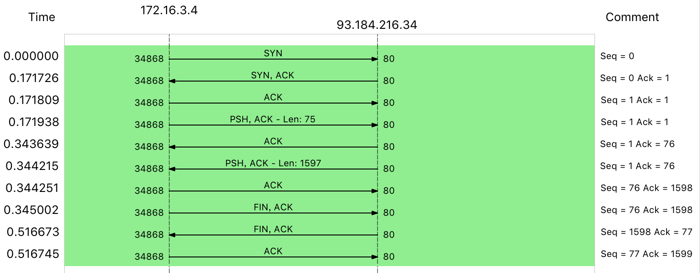
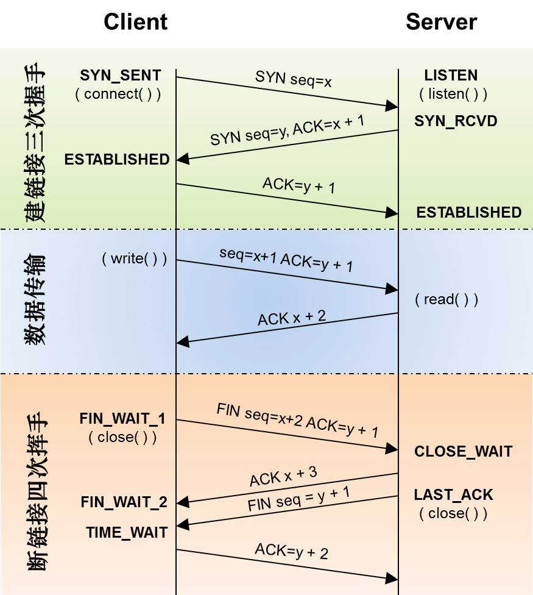
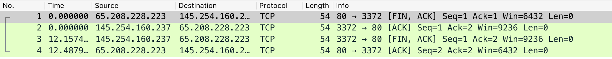

- 00 开篇词 别再让Linux性能问题成为你的绊脚石.md.html
- 01 如何学习Linux性能优化？.md.html
- 02 基础篇：到底应该怎么理解“平均负载”？.md.html
- 03 基础篇：经常说的 CPU 上下文切换是什么意思？（上）.md.html
- 04 基础篇：经常说的 CPU 上下文切换是什么意思？（下）.md.html
- 05 基础篇：某个应用的CPU使用率居然达到100%，我该怎么办？.md.html
- 06 案例篇：系统的 CPU 使用率很高，但为啥却找不到高 CPU 的应用？.md.html
- 07 案例篇：系统中出现大量不可中断进程和僵尸进程怎么办？（上）.md.html
- 08 案例篇：系统中出现大量不可中断进程和僵尸进程怎么办？（下）.md.html
- 09 基础篇：怎么理解Linux软中断？.md.html
- 10 案例篇：系统的软中断CPU使用率升高，我该怎么办？.md.html
- 11 套路篇：如何迅速分析出系统CPU的瓶颈在哪里？.md.html
- 12 套路篇：CPU 性能优化的几个思路.md.html
- 13 答疑（一）：无法模拟出 RES 中断的问题，怎么办？.md.html
- 14 答疑（二）：如何用perf工具分析Java程序？.md.html
- 15 基础篇：Linux内存是怎么工作的？.md.html
- 16 基础篇：怎么理解内存中的Buffer和Cache？.md.html
- 17 案例篇：如何利用系统缓存优化程序的运行效率？.md.html
- 18 案例篇：内存泄漏了，我该如何定位和处理？.md.html
- 19 案例篇：为什么系统的Swap变高了（上）.md.html
- 20 案例篇：为什么系统的Swap变高了？（下）.md.html
- 21 套路篇：如何“快准狠”找到系统内存的问题？.md.html
- 22 答疑（三）：文件系统与磁盘的区别是什么？.md.html
- 23 基础篇：Linux 文件系统是怎么工作的？.md.html
- 24 基础篇：Linux 磁盘I_O是怎么工作的（上）.md.html
- 25 基础篇：Linux 磁盘I_O是怎么工作的（下）.md.html
- 26 案例篇：如何找出狂打日志的“内鬼”？.md.html
- 27 案例篇：为什么我的磁盘I_O延迟很高？.md.html
- 28 案例篇：一个SQL查询要15秒，这是怎么回事？.md.html
- 29 案例篇：Redis响应严重延迟，如何解决？.md.html
- 30 套路篇：如何迅速分析出系统I_O的瓶颈在哪里？.md.html
- 31 套路篇：磁盘 I_O 性能优化的几个思路.md.html
- 32 答疑（四）：阻塞、非阻塞 I_O 与同步、异步 I_O 的区别和联系.md.html
- 33 关于 Linux 网络，你必须知道这些（上）.md.html
- 34 关于 Linux 网络，你必须知道这些（下）.md.html
- 35 基础篇：C10K 和 C1000K 回顾.md.html
- 36 套路篇：怎么评估系统的网络性能？.md.html
- 37 案例篇：DNS 解析时快时慢，我该怎么办？.md.html
- 38 案例篇：怎么使用 tcpdump 和 Wireshark 分析网络流量？.md.html
- 39 案例篇：怎么缓解 DDoS 攻击带来的性能下降问题？.md.html
- 40 案例篇：网络请求延迟变大了，我该怎么办？.md.html
- 41 案例篇：如何优化 NAT 性能？（上）.md.html
- 42 案例篇：如何优化 NAT 性能？（下）.md.html
- 43 套路篇：网络性能优化的几个思路（上）.md.html
- 44 套路篇：网络性能优化的几个思路（下）.md.html
- 45 答疑（五）：网络收发过程中，缓冲区位置在哪里？.md.html
- 46 案例篇：为什么应用容器化后，启动慢了很多？.md.html
- 47 案例篇：服务器总是时不时丢包，我该怎么办？（上）.md.html
- 48 案例篇：服务器总是时不时丢包，我该怎么办？（下）.md.html
- 49 案例篇：内核线程 CPU 利用率太高，我该怎么办？.md.html
- 50 案例篇：动态追踪怎么用？（上）.md.html
- 51 案例篇：动态追踪怎么用？（下）.md.html
- 52 案例篇：服务吞吐量下降很厉害，怎么分析？.md.html
- 53 套路篇：系统监控的综合思路.md.html
- 54 套路篇：应用监控的一般思路.md.html
- 55 套路篇：分析性能问题的一般步骤.md.html
- 56 套路篇：优化性能问题的一般方法.md.html
- 57 套路篇：Linux 性能工具速查.md.html
- 58 答疑（六）：容器冷启动如何性能分析？.md.html
- 加餐（一） 书单推荐：性能优化和Linux 系统原理.md.html
- 加餐（二） 书单推荐：网络原理和 Linux 内核实现.md.html
- 用户故事 “半路出家 ”，也要顺利拿下性能优化！.md.html
- 用户故事 运维和开发工程师们怎么说？.md.html
- 结束语 愿你攻克性能难关.md.html
- 捐赠
38 案例篇：怎么使用 tcpdump 和 Wireshark 分析网络流量？
你好，我是倪朋飞。
上一节，我们学习了 DNS 性能问题的分析和优化方法。简单回顾一下，DNS 可以提供域名和 IP 地址的映射关系，也是一种常用的全局负载均衡（GSLB）实现方法。
通常，需要暴露到公网的服务，都会绑定一个域名，既方便了人们记忆，也避免了后台服务 IP 地址的变更影响到用户。
不过要注意，DNS 解析受到各种网络状况的影响，性能可能不稳定。比如公网延迟增大，缓存过期导致要重新去上游服务器请求，或者流量高峰时 DNS 服务器性能不足等，都会导致 DNS 响应的延迟增大。
此时，可以借助 nslookup 或者 dig 的调试功能，分析 DNS 的解析过程，再配合 ping 等工具调试 DNS 服务器的延迟，从而定位出性能瓶颈。通常，你可以用缓存、预取、HTTPDNS 等方法，优化 DNS 的性能。
上一节我们用到的ping，是一个最常用的测试服务延迟的工具。很多情况下，ping 可以帮我们定位出延迟问题，不过有时候， ping 本身也会出现意想不到的问题。这时，就需要我们抓取ping 命令执行时收发的网络包，然后分析这些网络包，进而找出问题根源。
tcpdump 和 Wireshark 就是最常用的网络抓包和分析工具，更是分析网络性能必不可少的利器。
tcpdump 仅支持命令行格式使用，常用在服务器中抓取和分析网络包。
Wireshark 除了可以抓包外，还提供了强大的图形界面和汇总分析工具，在分析复杂的网络情景时，尤为简单和实用。
因而，在实际分析网络性能时，先用 tcpdump 抓包，后用 Wireshark 分析，也是一种常用的方法。
今天，我就带你一起看看，怎么使用 tcpdump 和 Wireshark ，来分析网络的性能问题。
案例准备
本次案例还是基于 Ubuntu 18.04，同样适用于其他的 Linux 系统。我使用的案例环境是这样的：
机器配置：2 CPU，8GB 内存。
预先安装 tcpdump、Wireshark 等工具，如：
# Ubuntu
apt-get install tcpdump wireshark
# CentOS
yum install -y tcpdump wireshark
由于 Wireshark 的图形界面，并不能通过 SSH 使用，所以我推荐你在本地机器（比如 Windows）中安装。你可以到 https://www.wireshark.org/ 下载并安装 Wireshark。
跟以前一样，案例中所有命令，都默认以 root 用户（在Windows中，运行Wireshark时除外）运行。如果你是用普通用户身份登陆系统，请运行 sudo su root 命令切换到 root 用户。
再探 ping
前面讲过，ping 是一种最常用的网络工具，常用来探测网络主机之间的连通性以及延迟。关于 ping 的原理和使用方法，我在前面的 Linux网络基础篇 已经简单介绍过，而 DNS 缓慢的案例中，也多次用到了 ping 测试 DNS 服务器的延迟（RTT）。
不过，虽然 ping 比较简单，但有时候你会发现，ping 工具本身也可能出现异常，比如运行缓慢，但实际网络延迟却并不大的情况。
接下来，我们打开一个终端，SSH 登录到案例机器中，执行下面的命令，来测试案例机器与极客邦科技官网的连通性和延迟。如果一切正常，你会看到下面这个输出：
# ping 3 次（默认每次发送间隔1秒）
# 假设DNS服务器还是上一期配置的114.114.114.114
$ ping -c3 geektime.org
PING geektime.org (35.190.27.188) 56(84) bytes of data.
64 bytes from 35.190.27.188 (35.190.27.188): icmp_seq=1 ttl=43 time=36.8 ms
64 bytes from 35.190.27.188 (35.190.27.188): icmp_seq=2 ttl=43 time=31.1 ms
64 bytes from 35.190.27.188 (35.190.27.188): icmp_seq=3 ttl=43 time=31.2 ms
--- geektime.org ping statistics ---
3 packets transmitted, 3 received, 0% packet loss, time 11049ms
rtt min/avg/max/mdev = 31.146/33.074/36.809/2.649 ms
ping 的输出界面， Linux网络基础篇 中我们已经学过，你可以先复习一下，自己解读并且分析这次的输出。
不过要注意，假如你运行时发现 ping 很快就结束了，那就执行下面的命令，再重试一下。至于这条命令的含义，稍后我们再做解释。
# 禁止接收从DNS服务器发送过来并包含googleusercontent的包
$ iptables -I INPUT -p udp --sport 53 -m string --string googleusercontent --algo bm -j DROP
根据 ping 的输出，你可以发现，geektime.org 解析后的 IP 地址是 35.190.27.188，而后三次 ping 请求都得到了响应，延迟（RTT）都是 30ms 多一点。
但汇总的地方，就有点儿意思了。3次发送，收到3次响应，没有丢包，但三次发送和接受的总时间居然超过了 11s（11049ms），这就有些不可思议了吧。
会想起上一节的 DNS 解析问题，你可能会怀疑，这可能是 DNS 解析缓慢的问题。但到底是不是呢？
再回去看 ping 的输出，三次 ping 请求中，用的都是 IP 地址，说明 ping 只需要在最开始运行时，解析一次得到 IP，后面就可以只用 IP了。
我们再用 nslookup 试试。在终端中执行下面的 nslookup 命令，注意，这次我们同样加了 time 命令，输出 nslookup 的执行时间：
$ time nslookup geektime.org
Server: 114.114.114.114
Address: 114.114.114.114#53
Non-authoritative answer:
Name: geektime.org
Address: 35.190.27.188
real 0m0.044s
user 0m0.006s
sys 0m0.003s
可以看到，域名解析还是很快的，只需要 44ms，显然比 11s 短了很多。
到这里，再往后该怎么分析呢？其实，这时候就可以用 tcpdump 抓包，查看 ping 在收发哪些网络包。
我们再打开另一个终端（终端二），SSH 登录案例机器后，执行下面的命令：
$ tcpdump -nn udp port 53 or host 35.190.27.188
当然，你可以直接用 tcpdump 不加任何参数来抓包，但那样的话，就可能抓取到很多不相干的包。由于我们已经执行过 ping 命令，知道了 geekbang.org 的 IP 地址是35.190.27.188，也知道 ping 命令会执行 DNS 查询。所以，上面这条命令，就是基于这个规则进行过滤。
我来具体解释一下这条命令。
-nn ，表示不解析抓包中的域名（即不反向解析）、协议以及端口号。
udp port 53 ，表示只显示 UDP协议的端口号（包括源端口和目的端口）为53的包。
host 35.190.27.188 ，表示只显示 IP 地址（包括源地址和目的地址）为35.190.27.188的包。
这两个过滤条件中间的“ or ”，表示或的关系，也就是说，只要满足上面两个条件中的任一个，就可以展示出来。
接下来，回到终端一，执行相同的 ping 命令：
$ ping -c3 geektime.org
...
--- geektime.org ping statistics ---
3 packets transmitted, 3 received, 0% packet loss, time 11095ms
rtt min/avg/max/mdev = 81.473/81.572/81.757/0.130 ms
命令结束后，再回到终端二中，查看 tcpdump 的输出：
tcpdump: verbose output suppressed, use -v or -vv for full protocol decode
listening on eth0, link-type EN10MB (Ethernet), capture size 262144 bytes
14:02:31.100564 IP 172.16.3.4.56669 > 114.114.114.114.53: 36909+ A? geektime.org. (30)
14:02:31.507699 IP 114.114.114.114.53 > 172.16.3.4.56669: 36909 1/0/0 A 35.190.27.188 (46)
14:02:31.508164 IP 172.16.3.4 > 35.190.27.188: ICMP echo request, id 4356, seq 1, length 64
14:02:31.539667 IP 35.190.27.188 > 172.16.3.4: ICMP echo reply, id 4356, seq 1, length 64
14:02:31.539995 IP 172.16.3.4.60254 > 114.114.114.114.53: 49932+ PTR? 188.27.190.35.in-addr.arpa. (44)
14:02:36.545104 IP 172.16.3.4.60254 > 114.114.114.114.53: 49932+ PTR? 188.27.190.35.in-addr.arpa. (44)
14:02:41.551284 IP 172.16.3.4 > 35.190.27.188: ICMP echo request, id 4356, seq 2, length 64
14:02:41.582363 IP 35.190.27.188 > 172.16.3.4: ICMP echo reply, id 4356, seq 2, length 64
14:02:42.552506 IP 172.16.3.4 > 35.190.27.188: ICMP echo request, id 4356, seq 3, length 64
14:02:42.583646 IP 35.190.27.188 > 172.16.3.4: ICMP echo reply, id 4356, seq 3, length 64
这次输出中，前两行，表示 tcpdump 的选项以及接口的基本信息；从第三行开始，就是抓取到的网络包的输出。这些输出的格式，都是 时间戳 协议 源地址.源端口 > 目的地址.目的端口 网络包详细信息（这是最基本的格式，可以通过选项增加其他字段）。
前面的字段，都比较好理解。但网络包的详细信息，本身根据协议的不同而不同。所以，要理解这些网络包的详细含义，就要对常用网络协议的基本格式以及交互原理，有基本的了解。
当然，实际上，这些内容都会记录在 IETF（ 互联网工程任务组）发布的 RFC（请求意见稿）中。
比如，第一条就表示，从本地 IP 发送到 114.114.114.114 的 A 记录查询请求，它的报文格式记录在 RFC1035 中，你可以点击这里查看。在这个 tcpdump 的输出中，
36909+ 表示查询标识值，它也会出现在响应中，加号表示启用递归查询。
A? 表示查询 A 记录。
geektime.org. 表示待查询的域名。
30 表示报文长度。
接下来的一条，则是从 114.114.114.114 发送回来的 DNS 响应——域名 geektime.org. 的 A 记录值为 35.190.27.188。
第三条和第四条，是 ICMP echo request 和 ICMP echo reply，响应包的时间戳 14:02:31.539667，减去请求包的时间戳 14:02:31.508164 ，就可以得到，这次 ICMP 所用时间为 30ms。这看起来并没有问题。
但随后的两条反向地址解析 PTR 请求，就比较可疑了。因为我们只看到了请求包，却没有应答包。仔细观察它们的时间，你会发现，这两条记录都是发出后 5s 才出现下一个网络包，两条 PTR 记录就消耗了 10s。
再往下看，最后的四个包，则是两次正常的 ICMP 请求和响应，根据时间戳计算其延迟，也是 30ms。
到这里，其实我们也就找到了 ping 缓慢的根源，正是两次 PTR 请求没有得到响应而超时导致的。PTR 反向地址解析的目的，是从 IP 地址反查出域名，但事实上，并非所有IP 地址都会定义 PTR 记录，所以 PTR 查询很可能会失败。
所以，在你使用 ping 时，如果发现结果中的延迟并不大，而 ping 命令本身却很慢，不要慌，有可能是背后的 PTR 在搞鬼。
知道问题后，解决起来就比较简单了，只要禁止 PTR 就可以。还是老路子，执行 man ping 命令，查询使用手册，就可以找出相应的方法，即加上 -n 选项禁止名称解析。比如，我们可以在终端中执行如下命令：
$ ping -n -c3 geektime.org
PING geektime.org (35.190.27.188) 56(84) bytes of data.
64 bytes from 35.190.27.188: icmp_seq=1 ttl=43 time=33.5 ms
64 bytes from 35.190.27.188: icmp_seq=2 ttl=43 time=39.0 ms
64 bytes from 35.190.27.188: icmp_seq=3 ttl=43 time=32.8 ms
--- geektime.org ping statistics ---
3 packets transmitted, 3 received, 0% packet loss, time 2002ms
rtt min/avg/max/mdev = 32.879/35.160/39.030/2.755 ms
你可以发现，现在只需要 2s 就可以结束，比刚才的 11s 可是快多了。
到这里， 我就带你一起使用 tcpdump ，解决了一个最常见的 ping 工作缓慢的问题。
案例最后，如果你在开始时，执行了 iptables 命令，那也不要忘了删掉它：
$ iptables -D INPUT -p udp --sport 53 -m string --string googleusercontent --algo bm -j DROP
不过，删除后你肯定还有疑问，明明我们的案例跟 Google 没啥关系，为什么要根据 googleusercontent ，这个毫不相关的字符串来过滤包呢？
实际上，如果换一个 DNS 服务器，就可以用 PTR 反查到 35.190.27.188 所对应的域名：
$ nslookup -type=PTR 35.190.27.188 8.8.8.8
Server: 8.8.8.8
Address: 8.8.8.8#53
Non-authoritative answer:
188.27.190.35.in-addr.arpa name = 188.27.190.35.bc.googleusercontent.com.
Authoritative answers can be found from:
你看，虽然查到了 PTR 记录，但结果并非 geekbang.org，而是 188.27.190.35.bc.googleusercontent.com。其实，这也是为什么，案例开始时将包含 googleusercontent 的丢弃后，ping 就慢了。因为 iptables ，实际上是把 PTR 响应给丢了，所以会导致 PTR 请求超时。
tcpdump 可以说是网络性能分析最有效的利器。接下来，我再带你一起看看 tcpdump 的更多使用方法。
tcpdump
我们知道，tcpdump 也是最常用的一个网络分析工具。它基于 libpcap ，利用内核中的 AF_PACKET 套接字，抓取网络接口中传输的网络包；并提供了强大的过滤规则，帮你从大量的网络包中，挑出最想关注的信息。
tcpdump 为你展示了每个网络包的详细细节，这就要求，在使用前，你必须要对网络协议有基本了解。而要了解网络协议的详细设计和实现细节， RFC 当然是最权威的资料。
不过，RFC 的内容，对初学者来说可能并不友好。如果你对网络协议还不太了解，推荐你去学《TCP/IP详解》，特别是第一卷的 TCP/IP 协议族。这是每个程序员都要掌握的核心基础知识。
再回到 tcpdump工具本身，它的基本使用方法，还是比较简单的，也就是 tcpdump [选项] [过滤表达式]。当然，选项和表达式的外面都加了中括号，表明它们都是可选的。
提示：在 Linux 工具中，如果你在文档中看到，选项放在中括号里，就说明这是一个可选选项。这时候就要留意一下，这些选项是不是有默认值。
查看 tcpdump 的 手册 ，以及 pcap-filter 的手册，你会发现，tcpdump 提供了大量的选项以及各式各样的过滤表达式。不过不要担心，只需要掌握一些常用选项和过滤表达式，就可以满足大部分场景的需要了。
为了帮你更快上手 tcpdump 的使用，我在这里也帮你整理了一些最常见的用法，并且绘制成了表格，你可以参考使用。
首先，来看一下常用的几个选项。在上面的ping 案例中，我们用过 -nn 选项，表示不用对 IP 地址和端口号进行名称解析。其他常用选项，我用下面这张表格来解释。

接下来，我们再来看常用的过滤表达式。刚刚用过的是 udp port 53 or host 35.190.27.188 ，表示抓取 DNS 协议的请求和响应包，以及源地址或目的地址为 35.190.27.188 的包。
其他常用的过滤选项，我也整理成了下面这个表格。

最后，再次强调 tcpdump 的输出格式，我在前面已经介绍了它的基本格式：
时间戳 协议 源地址.源端口 > 目的地址.目的端口 网络包详细信息
其中，网络包的详细信息取决于协议，不同协议展示的格式也不同。所以，更详细的使用方法，还是需要你去查询 tcpdump 的 man 手册（执行 man tcpdump 也可以得到）。
不过，讲了这么多，你应该也发现了。tcpdump 虽然功能强大，可是输出格式却并不直观。特别是，当系统中网络包数比较多（比如PPS 超过几千）的时候，你想从 tcpdump 抓取的网络包中分析问题，实在不容易。
对比之下，Wireshark 则通过图形界面，以及一系列的汇总分析工具，提供了更友好的使用界面，让你可以用更快的速度，摆平网络性能问题。接下来，我们就详细来看看它。
Wireshark
Wireshark 也是最流行的一个网络分析工具，它最大的好处就是提供了跨平台的图形界面。跟 tcpdump 类似，Wireshark 也提供了强大的过滤规则表达式，同时，还内置了一系列的汇总分析工具。
比如，拿刚刚的 ping 案例来说，你可以执行下面的命令，把抓取的网络包保存到 ping.pcap 文件中：
$ tcpdump -nn udp port 53 or host 35.190.27.188 -w ping.pcap
接着，把它拷贝到你安装有 Wireshark 的机器中，比如你可以用 scp 把它拷贝到本地来：
$ scp host-ip/path/ping.pcap .
然后，再用 Wireshark 打开它。打开后，你就可以看到下面这个界面：

从 Wireshark 的界面里，你可以发现，它不仅以更规整的格式，展示了各个网络包的头部信息；还用了不同颜色，展示 DNS 和 ICMP 这两种不同的协议。你也可以一眼看出，中间的两条 PTR 查询并没有响应包。
接着，在网络包列表中选择某一个网络包后，在其下方的网络包详情中，你还可以看到，这个包在协议栈各层的详细信息。比如，以编号为 5 的 PTR 包为例：

你可以看到，IP 层（Internet Protocol）的源地址和目的地址、传输层的 UDP 协议（User Datagram Protocol）、应用层的 DNS 协议（Domain Name System）的概要信息。
继续点击每层左边的箭头，就可以看到该层协议头的所有信息。比如点击 DNS 后，就可以看到 Transaction ID、Flags、Queries 等 DNS 协议各个字段的数值以及含义。
当然，Wireshark 的功能远不止如此。接下来我再带你一起，看一个 HTTP 的例子，并理解 TCP 三次握手和四次挥手的工作原理。
这个案例我们将要访问的是 http://example.com/ 。进入终端一，执行下面的命令，首先查出 example.com 的 IP。然后，执行 tcpdump 命令，过滤得到的 IP 地址，并将结果保存到 web.pcap 中。
$ dig +short example.com
93.184.216.34
$ tcpdump -nn host 93.184.216.34 -w web.pcap
实际上，你可以在 host 表达式中，直接使用域名，即 tcpdump -nn host example.com -w web.pcap。
接下来，切换到终端二，执行下面的 curl 命令，访问 http://example.com：
$ curl http://example.com
最后，再回到终端一，按下 Ctrl+C 停止 tcpdump，并把得到的 web.pcap 拷贝出来。
使用 Wireshark 打开 web.pcap 后，你就可以在 Wireshark 中，看到如下的界面：

由于 HTTP 基于 TCP ，所以你最先看到的三个包，分别是 TCP 三次握手的包。接下来，中间的才是 HTTP 请求和响应包，而最后的三个包，则是 TCP 连接断开时的三次挥手包。
从菜单栏中，点击 Statistics -> Flow Graph，然后，在弹出的界面中的 Flow type 选择 TCP Flows，你可以更清晰的看到，整个过程中 TCP 流的执行过程：

这其实跟各种教程上讲到的，TCP 三次握手和四次挥手很类似，作为对比， 你通常看到的 TCP 三次握手和四次挥手的流程，基本是这样的：

(图片来自酷壳)
不过，对比这两张图，你会发现，这里抓到的包跟上面的四次挥手，并不完全一样，实际挥手过程只有三个包，而不是四个。
其实，之所以有三个包，是因为服务器端收到客户端的 FIN 后，服务器端同时也要关闭连接，这样就可以把 ACK 和 FIN 合并到一起发送，节省了一个包，变成了“三次挥手”。
而通常情况下，服务器端收到客户端的 FIN 后，很可能还没发送完数据，所以就会先回复客户端一个 ACK 包。稍等一会儿，完成所有数据包的发送后，才会发送 FIN 包。这也就是四次挥手了。
抓包后， Wireshark 中就会显示下面这个界面（原始网络包来自 Wireshark TCP 4-times close 示例，你可以点击 这里 下载）：

当然，Wireshark 的使用方法绝不只有这些，更多的使用方法，同样可以参考 官方文档 以及 WIKI。
小结
今天，我们一起学了 tcpdump 和 Wireshark 的使用方法，并通过几个案例，学会了如何运用这两个工具来分析网络的收发过程，并找出潜在的性能问题。
当你发现针对相同的网络服务，使用 IP 地址快而换成域名却慢很多时，就要想到，有可能是 DNS 在捣鬼。DNS 的解析，不仅包括从域名解析出 IP 地址的 A 记录请求，还包括性能工具帮你，“聪明”地从 IP 地址反查域名的 PTR 请求。
实际上，根据 IP 地址反查域名、根据端口号反查协议名称，是很多网络工具默认的行为，而这往往会导致性能工具的工作缓慢。所以，通常，网络性能工具都会提供一个选项（比如 -n 或者 -nn），来禁止名称解析。
在工作中，当你碰到网络性能问题时，不要忘记tcpdump 和 Wireshark 这两个大杀器。你可以用它们抓取实际传输的网络包，再排查是否有潜在的性能问题。
思考
最后，我想请你来聊一聊，你是如何使用 tcpdump 和 Wireshark 的。你用 tcpdump 或者 Wireshark 解决过哪些网络问题呢？你又是如何排查、分析并解决的呢？你可以结合今天学到的网络知识，总结自己的思路。
欢迎在留言区和我讨论，也欢迎你把这篇文章分享给你的同事、朋友。我们一起在实战中演练，在交流中进步。
© 2019 - 2023 Liangliang Lee. Powered by gin and hexo-theme-book.